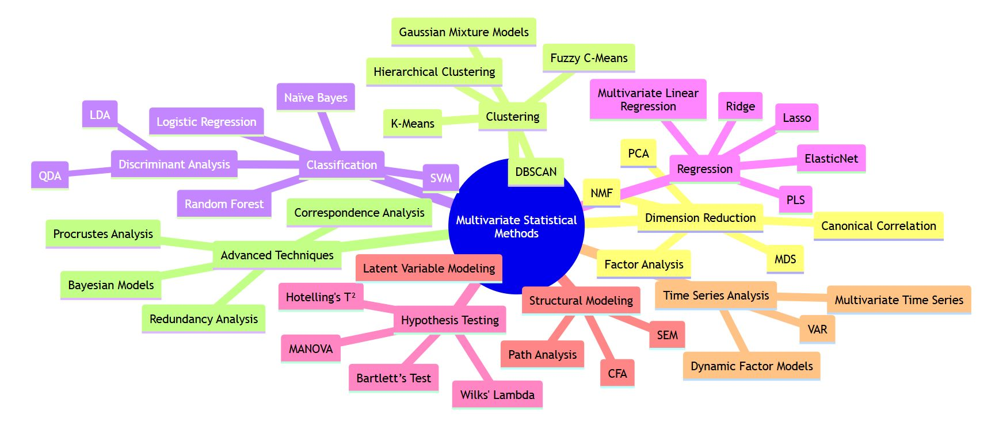
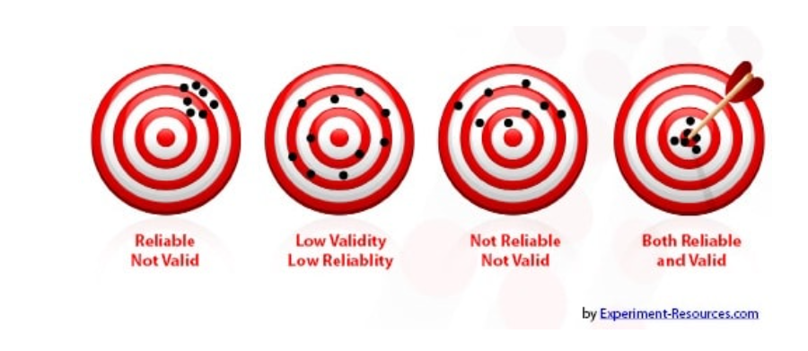

2 Course details
2.1 Fundamental Concepts and Methods in Psychological Statistics
- Readings:
- Navarro & Foxcroft (2022)
- Previous course material
- Basic of Mathematics
- Statistics for Psychologists 1.
- Statistics for Psychologists 2.
- Computer Science 1.
- Computer Science 2.
- Optional Readings:
- Computer lab: Lab 01
- Homework assignments: Homework 01
- Practice Test: Fundamental Concepts and Methods in Psychological Statistics (on the eLearning site)
Test your knowledge
Test your knowledge with the following questions. These questions are based on knowledge that was included in your previous studies.
Statistics is the science (and art) of collecting, organizing, analyzing, interpreting, and presenting data. It encompasses methods for:
- Data Collection: Designing studies, surveys, and experiments to gather reliable information.
- Data Analysis: Summarizing data (descriptive statistics) and drawing conclusions or inferences (inferential statistics).
- Interpretation & Presentation: Communicating findings clearly to support decision-making.
By applying statistical methods, researchers and analysts can quantify uncertainty, detect patterns, make predictions, and guide evidence-based conclusions in fields such as science, healthcare, business, and social research.
Psychology students need to study statistics because it enables them to:
- Interpret Research
-
Psychology relies heavily on empirical research. Statistics provide the tools to make sense of data, assess whether observed differences or relationships are meaningful, and understand the implications of research findings.
- Design Valid Experiments
-
Good experimental design (sampling, control groups, randomization) and robust statistical methods help ensure that results are valid and that biases or confounds are minimized.
- Evaluate Theories
-
Psychological theories are often tested through hypothesis testing. Statistical techniques allow psychologists to evaluate whether evidence supports or refutes these hypotheses.
- Make Data-Driven Decisions
-
Whether in clinical practice, organizational settings, or academic research, psychologists often collect and analyze data (e.g., patient assessments, surveys). Knowing statistics ensures they can interpret results accurately and apply them in decision-making.
- Communicate Findings
-
Understanding statistics helps psychologists properly report results (e.g., effect sizes, p-values, confidence intervals) so that other researchers and professionals can evaluate the reliability and significance of their work.
For more details:
- Population
-
The entire set of items or individuals you want to study. For example, “all citizens of a country” could be a population in a study on average income.
- Sample
-
A subset of the population used to gather information. Because studying the entire population is often impractical (e.g., time, cost), researchers typically collect data from a sample.
For more details:
- Parameter
-
A numerical measure that describes a characteristic of a population (e.g., the true population mean or proportion).
- Statistic
-
A numerical measure that describes a characteristic of a sample. When we estimate population parameters using sample data, we use statistics (e.g., the sample mean or sample proportion).
For more details:
- Variable
-
A characteristic or attribute that can take on different values across individuals or items. Examples include age, height, weight, test scores, or income level.
- Dataset
-
A dataset in statistics is a structured collection of data—often arranged in a tabular format where each row represents an individual observation (e.g., a person, an event, or a test subject), and each column represents a variable or characteristic measured about those observations. Datasets are the raw material for statistical analysis, where researchers summarize, visualize, and draw inferences about underlying patterns or relationships in the data. Some common synonyms for “dataset” include data collection, data corpus, data table, data matrix, database and data repository.
For more details:
Statistical Levels of Measurement
Traditionally, four levels of measurement are distinguished in statistics:
- Nominal:
- Definition: Categories without any inherent order (e.g., gender, blood type).
- Example: “Male” vs. “Female” vs. “Other” — these are different categories, and there’s no “greater than” or “less than” relationship.
- Definition: Categories without any inherent order (e.g., gender, blood type).
- Ordinal:
- Definition: Categories that have a specific order but unknown or uneven intervals between them (e.g., ratings, ranks).
- Example: A satisfaction survey: “Very Dissatisfied,” “Dissatisfied,” “Neutral,” “Satisfied,” “Very Satisfied.” You know the order matters, but you can’t be sure the gap between “Very Dissatisfied” and “Dissatisfied” is the same as between “Satisfied” and “Very Satisfied.”
- Definition: Categories that have a specific order but unknown or uneven intervals between them (e.g., ratings, ranks).
- Interval:
- Definition: Numeric data with consistent intervals but no true zero point (e.g., temperature in Celsius or Fahrenheit).
- Example: A temperature of 20°C is exactly 10° higher than 10°C, but 0°C doesn’t mean “no temperature.”
- Definition: Numeric data with consistent intervals but no true zero point (e.g., temperature in Celsius or Fahrenheit).
- Ratio:
- Definition: Numeric data with consistent intervals and a meaningful zero point (e.g., height, weight).
- Example: A height of 0 cm indicates the complete absence of height, and a person who is 180 cm tall is exactly twice as tall as someone who is 90 cm tall.
- Definition: Numeric data with consistent intervals and a meaningful zero point (e.g., height, weight).
For more details:
- Combining Interval and Ratio as “Continuous”: In many statistical analyses, both interval and ratio data can be treated similarly (for example, running the same parametric tests). Because the distinction between interval and ratio often doesn’t affect the type of test or the analysis approach, jamovi simplifies them into a single type called “Continuous.”
- Nominal and Ordinal: These categories remain separate because ordinal data can be used in certain non-parametric tests (such as a Spearman correlation), while nominal data often requires different methods (such as a chi-square test).
Thus, jamovi streamlines user input into three levels—Nominal, Ordinal, Continuous—to cover virtually all common statistical procedures without overcomplicating the process for end users.
For more details:
Jamovi can import data from a wide range of file formats, including:
- CSV (comma-separated values) and TSV (tab-separated values)
- Excel files (.xls, .xlsx)
- SPSS files (.sav)
- Stata files (.dta)
- R files (.RDS, RData)
- Jamovi’s own file format (usually .omv)
Once imported, jamovi displays the data in a spreadsheet-like view, letting you perform statistical analyses without needing to convert the file elsewhere.
For more details:
Statistical variables are traditionally classified into four levels of measurement—nominal, ordinal, interval, and ratio. In practice:
- Categorical Variables
- Typically nominal (e.g., gender: male/female) or ordinal (e.g., satisfaction levels: “low,” “medium,” “high”).
- These levels categorize data without providing true numeric distances.
- Typically nominal (e.g., gender: male/female) or ordinal (e.g., satisfaction levels: “low,” “medium,” “high”).
- Numeric Variables
- Usually interval (e.g., temperature in Celsius, no true zero) or ratio (e.g., height, weight, true zero).
- These levels let you quantify distances or ratios between values.
- Usually interval (e.g., temperature in Celsius, no true zero) or ratio (e.g., height, weight, true zero).
Thus, the relation is that categorical variables map naturally to nominal/ordinal levels, while numeric variables map to interval/ratio levels.
A categorical variable (also called a qualitative variable) represents data that can be divided into groups or categories. These categories typically have no numeric relationship to one another.
- Examples:
- Gender (male, female, other)
- Blood type (A, B, AB, O)
- Type of car (SUV, Sedan, Truck)
- Gender (male, female, other)
In contrast, a numerical variable (also called a quantitative variable) represents data that are measured or counted and therefore are inherently numeric.
- Examples:
- Age (in years)
- Height (in centimeters)
- Number of siblings (integer count)
- Age (in years)
In short, categorical variables describe qualities or classifications, while numerical variables represent quantities or measurements.
For more details:
Descriptive Statistics
- Definition: Summarize and describe the main features of a dataset.
- Examples:
- Central Tendency: Mean, Median, Mode
- Spread: Range, Variance, Standard Deviation
- Visualizations: Histograms, Box Plots, Pie Charts
- Purpose: Provide a straightforward understanding of the data at hand. Descriptive statistics do not make generalizations about any larger population beyond the dataset.
Inferential Statistics
- Definition: Draw conclusions or inferences about a broader population based on a sample.
- Examples:
- Hypothesis Testing: t-tests, ANOVA, Chi-square tests
- Estimation: Confidence Intervals, Margin of Error
- Regression Analysis: Predict outcomes or relationships between variables
- Purpose: Go beyond the data at hand to make probabilistic statements about population parameters, assess statistical significance, and forecast unknown values.
For more details:
Descriptive statistics work with various tools and techniques designed to summarize and describe data in a clear, understandable form. Common tools include:
- Measures of Central Tendency: Mean, Median, and Mode — these summarize where most data points cluster.
- Measures of Dispersion: Range, Variance, and Standard Deviation — these show how spread out the data is around the central point.
- Frequency Tables: Tables that show how often each value or category appears in the data.
- Charts and Graphs: Such as histograms, bar charts, pie charts, box plots, and scatter plots — visual aids that help identify patterns, trends, and outliers.
- Percentiles and Quartiles: These divide the data set into specific intervals, offering insight into the distribution.
In everyday language, the terms “charts” and “graphs” are often used interchangeably, but some make a distinction:
Charts are a broad category of data visualization tools—such as bar charts, pie charts, and flowcharts—that may include text, images, or additional labels alongside numeric data to convey information.
Graphs typically focus on numeric relationships plotted on axes (like line graphs, scatter plots, or histograms). They often emphasize patterns, correlations, or trends in the data points themselves.
Despite these nuances, many people use “chart” and “graph” as general synonyms for visual representations of data.
In statistics and data visualization, the term “plot” is often used similarly to “graph,” generally referring to a coordinate-based visual representation of data (e.g., scatter plots, line plots, box plots). Plots tend to focus on the relationship or pattern among data points, typically using an x- and y-axis to convey numeric values and trends.
In a nutshell:
- Chart
- A broad category of data visuals that might include images, text labels, or other elements.
- Examples: pie chart, bar chart, flowchart.
- A broad category of data visuals that might include images, text labels, or other elements.
- Graph
- A more specific type of diagram often highlighting numeric relationships on axes.
- Examples: line graph, histogram, scatter graph.
- A more specific type of diagram often highlighting numeric relationships on axes.
- Plot
- Typically used in a mathematical or statistical context to show data points on one or more axes.
- Emphasizes patterns, trends, or distributions in numeric data (e.g., scatter plot, box plot).
- Typically used in a mathematical or statistical context to show data points on one or more axes.
For more details:
Inferential statistics use a variety of analytical techniques to draw conclusions about a population from sample data. Common tools include:
- Hypothesis Testing
- t-tests (e.g., One-Sample, Independent Samples, Paired Samples)
- ANOVA (Analysis of Variance)
- Chi-Square Tests (e.g., for categorical data)
- Nonparametric Tests (e.g., Mann–Whitney U, Wilcoxon Signed-Rank, Kruskal–Wallis)
- t-tests (e.g., One-Sample, Independent Samples, Paired Samples)
- Confidence Intervals
- Confidence intervals around means, proportions, or other statistics
- Provide a range of plausible values for a population parameter
- Confidence intervals around means, proportions, or other statistics
- Regression Analysis
- Linear Regression (simple or multiple)
- Logistic Regression (for binary outcomes)
- Other Generalized Linear Models (to handle counts, rates, etc.)
- Linear Regression (simple or multiple)
- Correlation Analyses
- Pearson’s Correlation (linear relationship between two continuous variables)
- Spearman’s Rank Correlation (for ordinal or non-normal data)
- Pearson’s Correlation (linear relationship between two continuous variables)
- Effect Size Measures
- Cohen’s d (for differences in means)
- Odds Ratios or Relative Risk (in logistic contexts)
- Eta-squared, Partial eta-squared (ANOVA effect sizes)
- Cohen’s d (for differences in means)
These tools, together with proper study design and data collection methods, allow statisticians and researchers to infer broader truths about populations and assess the uncertainty of those inferences.
For more details:
Statistical software packages (like Jamovi) facilitate comprehensive data handling and analysis through four main activities:
1. Data Importation
- Easily read data from various formats (e.g., CSV, Excel, databases).2. Data Preparation for Analysis
- Clean and organize data to ensure accurate and efficient analysis.3. Data Analysis
- Perform descriptive statistics for data summarization. Conduct inferential statistical analyses for hypothesis testing.4. Preparation for Publication
- Create formatted reports and visualizations ready for sharing and publication.Statistical software streamlines the entire research process, from data importation to publication-ready results.
A typical data preparation workflow in jamovi might look like this:
- Import the Dataset
- Open jamovi and go to Data → Open, then select your file (e.g., CSV, XLSX, SAV).
- Define Measure Types
- Click on the Data tab.
- Check each variable’s measure type (Nominal, Ordinal, Continuous) and rename or relabel variables as needed.
- Click on the Data tab.
- Examine Data Quality
- Look for missing values, outliers, or inconsistencies.
- Decide how to handle missing data (e.g., remove cases, impute, etc.).
- Look for missing values, outliers, or inconsistencies.
- Recode or Compute Variables (If Needed)
- Use Data → Computed Variable or Transform to create new variables or recode existing ones (e.g., collapsing categories, creating dummy variables).
- Filter or Split Data (If Needed)
- Under Data → Filters, create logical rules to include or exclude certain rows, or separate the dataset into subsets.
- Quick Descriptive Check
- Run simple descriptive statistics or create histograms in the Exploration → Descriptives menu to ensure data look reasonable and to identify potential issues.
Once you’ve set up your data properly, you can proceed to more advanced descriptive or inferential analyses with confidence that your data are in the correct format and free from major issues.
For more details:
A typical descriptive statistics workflow in jamovi might look like this:
- Load Your Data
- Open jamovi, click Data → Open, and select your dataset (CSV, XLSX, SAV, etc.).
- Set Measurement Levels
- In the Data tab, ensure each variable is set to the correct measure type (Nominal, Ordinal, or Continuous).
- Access Descriptives
- Go to the Analyses tab, select Exploration, then Descriptives.
- Choose Variables
- Move the variables you want to analyze into the Variables box.
- Select Statistics and Plots
- Under Statistics, choose the measures (e.g., Mean, Median, Standard Deviation, Min, Max) you want to see.
- Under Plots, you can select options like Histogram, Boxplot, or Density to visualize distributions.
- Under Statistics, choose the measures (e.g., Mean, Median, Standard Deviation, Min, Max) you want to see.
- Interpret Output
- jamovi will produce tables with summary statistics and any chosen graphs. Examine these to understand the distribution, central tendency, and variability of each variable.
This process provides a straightforward, menu-driven way to quickly summarize and visualize your dataset using descriptive statistics in jamovi.
For more details:
A typical inferential statistics workflow in jamovi might look like this:
- Load Your Data
- Open jamovi, click Data → Open, and select your dataset (e.g., CSV, XLSX, SAV).
- Set Measurement Levels
- In the Data tab, ensure each variable is correctly set to Nominal, Ordinal, or Continuous (jamovi’s simplified approach to measurement levels).
- Select an Appropriate Analysis
- Under the Analyses tab, choose the module that corresponds to your hypothesis test or model (e.g., T-Tests, ANOVA, Regression, Nonparametric, etc.).
- Define Your Variables
- Move the relevant variables into the appropriate fields (e.g., “Dependent Variable,” “Independent Variable,” “Grouping Variable,” etc.) as required by the test or model.
- Check Assumptions (If Applicable)
- Depending on your analysis, you may check:
- Normality (e.g., via Q–Q plots, Shapiro–Wilk test)
- Homogeneity of variances (e.g., Levene’s test)
- Linearity or independence assumptions (in regression)
- Depending on your analysis, you may check:
- Review Test Results
- jamovi will produce:
- P-values and Confidence Intervals
- Effect Size measures (e.g., Cohen’s d, η², OR)
- Diagnostic plots (for regression, residual plots, etc.)
- Use these outputs to decide whether to accept or reject your null hypothesis, or to interpret the strength of any significant relationships.
- jamovi will produce:
- Communicate Findings
- Summarize your results, including:
- Descriptive stats (means, SDs)
- Inferential conclusions (statistical significance, effect sizes, confidence intervals)
- If necessary, export your tables and graphs from jamovi into your report or presentation.
- Summarize your results, including:
This menu-driven approach in jamovi allows researchers to conduct various parametric (e.g., t-tests, ANOVA, linear regression) or nonparametric (e.g., Mann–Whitney, Wilcoxon, Kruskal–Wallis) inferential analyses in a user-friendly environment, helping them draw conclusions about broader populations from sample data.
For more details:
- Mean (Average)
-
The sum of all data points divided by the number of points (sample or population). It gives a central tendency but can be influenced by extreme values (outliers).
- Median
-
The middle value in an ordered list of data. Half the data points lie above it, and half lie below. The median is less sensitive to outliers than the mean.
- Mode
-
The most frequently occurring value(s) in a dataset. A dataset may have one mode (unimodal), more than one mode (multimodal), or no mode at all if no value repeats.
For more details:
- Variance
-
The average of the squared differences from the mean. It measures how spread out the data is.
- Standard Deviation
-
The square root of the variance. It is in the same units as the data and also indicates data spread.
For more details:
A function that shows the possible values of a random variable and how often they occur (their probabilities). Common distributions include the Normal (Gaussian) distribution, Binomial distribution, etc.
For more details:
A procedure to test whether a claim about a population parameter is supported by sample data. It involves:
- **Null Hypothesis ($H_0$)**: The default assumption (no effect, no difference).\
- **Alternative Hypothesis ($H_1$ or $H_a$)**: The claim that there is a statistically significant effect or difference.For more details:
The probability of obtaining a result at least as extreme as the one observed in the sample, assuming the null hypothesis is true. A small p-value (typically < 0.05) often leads to rejecting the null hypothesis in favor of the alternative.
For more details:
A range of values (e.g., for a mean) that is likely to contain the true population parameter. A 95% confidence interval means that if we repeated the study many times, about 95% of the calculated intervals would contain the true parameter.
These concepts form the backbone of most statistical analyses and will come up frequently in any data-driven or research setting.
For more details:
Good to know
As we know, statistics has two main branches: descriptive and inferential:
- Descriptive statistics summarize and describe the features of a dataset (e.g., calculating means, medians, or visualizing distributions).
- Inferential statistics draw conclusions or make predictions about a larger population based on sample data (e.g., hypothesis testing, confidence intervals).
However, we can also distinguish univariate, bivariate, and multivariate approaches, depending on the number of variables being analyzed:
- Univariate involves a single variable,
- Bivariate involves two,
- Multivariate involves three or more.
These two frameworks—descriptive vs. inferential, and univariate/bivariate/multivariate—can be combined in various ways to thoroughly explore and interpret data in psychology.
Multivariate statistics deals with the simultaneous analysis of three or more variables, allowing researchers to uncover complex relationships, interactions, and patterns among multiple constructs that would otherwise remain hidden in simpler (univariate or bivariate) analyses.
Where do multivariate analyses come from?
- If we increase the number of independent variables in a simple linear regression, the bivariate analysis immediately becomes a multivariate analysis, which we call multiple linear regression.
- Similarly, if there is still only one dependent variable but it is categorical, then having multiple independent variables also leads to multivariate statistical methods, namely logistic regression and linear discriminant analysis.
- If we increase the number of dependent variables in a one-way analysis of variance (ANOVA), we obtain a multivariate analysis of variance (MANOVA).
- There are also inherently multivariate procedures. They arise from the need to understand complex datasets with multiple variables.
- PCA (Principal Component Analysis) reduces dimensionality by identifying the main directions of variance.
- Reliability Analyses serve to evaluate how consistently a measurement instrument (e.g., a questionnaire or test) captures the construct it intends to measure.
- EFA (Exploratory Factor Analysis) uncovers underlying factors or latent variables without predetermined structure.
- CFA (Confirmatory Factor Analysis) tests a hypothesized factor structure, confirming whether measured variables align with theoretical constructs.
- Cluster Analysis groups similar observations or variables, revealing natural patterns in data.
- PCA (Principal Component Analysis) reduces dimensionality by identifying the main directions of variance.
In this semester we will learn about the above procedures, but of course there are many other multivariate statistical methods, these are illustrated in Figure 2.1.

Know the Question First
Any time we perform a statistical procedure —- even a multivariate one —- we must be clear on what specific question it aims to answer. Without understanding the problem the analysis is designed to solve, it’s impossible to interpret the results correctly. Simply put, knowing the purpose behind a method is as crucial as knowing how to execute it.
Below are a few multivariate statistical methods and the main questions they aim to answer:
Multiple Regression:
- How can we predict a single continuous outcome using multiple predictor variables, and which predictors are most influential?
Principal Component Analysis (PCA):
- How can we reduce a large set of variables into fewer underlying dimensions (components) while capturing most of the variance?
Reliability Analysis:
- How consistent (internally coherent) are the items in my scale or questionnaire when measuring a single construct?
Factor Analysis (Exploratory and Confirmatory):
- What underlying factors or latent variables explain the correlations among observed items, and do they match my theoretical model?
Cluster Analysis:
- How can we group subjects or observations so that each group is internally similar, yet different from other groups?
MANOVA (Multivariate Analysis of Variance):
- Do distinct groups differ across multiple continuous outcome variables simultaneously?
Linear Discriminant Analysis:
- How can we classify observations into known groups based on multiple predictors, and which predictors most effectively separate these groups?
Logistic Regression:
- Which predictors best explain or predict the probability of a binary outcome (e.g., success vs. failure), and how strong is each predictor’s effect?
2.2 Multiple Regression I.
- Readings:
- Navarro & Foxcroft (2022)
- Chapter 12.1 Correlation
- Chapter 12.2 Scatterplots
- Chapter 12.3 What is a linear regression model?
- Chapter 12.4 Estimating a linear regression model
- Chapter 12.5 Multiple linear regression
- Chapter 12.6 Quantifying the fit of the regression model
- Chapter 12.7 Hypothesis tests for regression models
- Chapter 12.8 Regarding regression coefficients
- Navarro & Foxcroft (2022)
- Computer lab: Lab 02
- Homework assignments: Homework 02
- Practice Test: Multiple Regression I. (on the eLearning site)
Good to know
Correlation
Correlation is a statistical measure that describes the strength and direction of a relationship between two variables. It quantifies how changes in one variable are associated with changes in another.
Key Aspects of Correlation:
- Positive Correlation (+) – When one variable increases, the other also increases (e.g., height and weight).
- Negative Correlation (-) – When one variable increases, the other decreases (e.g., speed and travel time).
- Zero Correlation (0) – No relationship between the variables.
Types of Correlation:
- Pearson Correlation – Measures linear relationships.
- Spearman Rank Correlation – Measures monotonic relationships (non-linear).
- Kendall’s Tau – Measures the strength of ordinal associations.
You can describe correlation using the words relationship and association as follows:
- Relationship
- “There is a strong relationship between exercise and cardiovascular health.”
- “The relationship between temperature and ice cream sales is positive: as temperature increases, sales rise.”
- “There is a strong relationship between exercise and cardiovascular health.”
- Association
- “A significant association exists between smoking and lung cancer.”
- “The study found a weak association between social media use and academic performance.”
- “A significant association exists between smoking and lung cancer.”
Key Differences:
- Relationship is a broader term that suggests a connection between two variables, which could be causal or non-causal.
- Association is often used in statistical contexts, indicating that two variables change together without implying causation.
What Does Strong or Weak Correlation Mean?
Correlation measures the strength and direction of the relationship between two variables. It is usually expressed using the correlation coefficient (r), which ranges from -1 to +1.
1. Strong Correlation
- A strong correlation means that two variables have a close relationship—when one changes, the other tends to change in a predictable way.
- If r is close to +1 or -1, the relationship is strong.
- Examples:
- Strong positive correlation (close to +1): Height and weight in adults.
- Strong negative correlation (close to -1): Time spent studying and number of mistakes on a test.
2. Weak Correlation
- A weak correlation means that the relationship between two variables is not very strong—changes in one variable do not reliably predict changes in the other.
- If r is close to 0, the relationship is weak or nonexistent.
- Examples:
- Weak positive correlation (r ≈ 0.2): Hours of sleep and job performance.
- Weak negative correlation (r ≈ -0.3): Daily coffee consumption and stress levels.
Correlation Strength Guide:
| Correlation Coefficient (r) | Strength |
|---|---|
| 0.9 to 1.0 or -0.9 to -1.0 | Very strong |
| 0.7 to 0.9 or -0.7 to -0.9 | Strong |
| 0.4 to 0.7 or -0.4 to -0.7 | Moderate |
| 0.1 to 0.4 or -0.1 to -0.4 | Weak |
| 0.0 to 0.1 or -0.0 to -0.1 | Very weak or no correlation |
What Does the Direction of Correlation Mean?
The direction of correlation refers to whether two variables increase or decrease together or move in opposite directions. Correlation can be positive, negative, or zero, depending on how the variables are related.
1. Positive Correlation (r > 0)
- Both variables move in the same direction.
- When one variable increases, the other also increases.
- When one variable decreases, the other also decreases.
- When one variable increases, the other also increases.
When we have positive correlation, we can say low values from the first variable tend to be associated with low values from the second variable, and high values from the first variable tend to be associated with high values from the second variable.
For example:
- If there is a positive correlation between hours studied and exam scores, then students who study less tend to score lower, while students who study more tend to score higher.
Examples: - The more hours you study, the higher your exam score. - The more time spent exercising, the more calories burned.
Example correlation coefficient (r): +0.8 (strong positive), +0.3 (weak positive).
2. Negative Correlation (r < 0)
- Variables move in opposite directions.
- When one variable increases, the other decreases.
- When one variable decreases, the other increases.
- When one variable increases, the other decreases.
Examples: - The more time spent watching TV, the lower the physical activity level. - The higher the temperature, the lower the sales of winter jackets.
Example correlation coefficient (r): -0.9 (strong negative), -0.4 (moderate negative).
In the case of negative correlation, we can say:
Low values from the first variable tend to be associated with high values from the second variable, and high values from the first variable tend to be associated with low values from the second variable.
Examples:
- If there is a negative correlation between time spent watching TV and physical activity, then:
- People who watch more TV tend to engage in less physical activity (high TV time → low physical activity).
- People who watch less TV tend to engage in more physical activity (low TV time → high physical activity).
- People who watch more TV tend to engage in less physical activity (high TV time → low physical activity).
3. Zero Correlation (r ≈ 0)
No clear relationship between the variables.
- Changes in one variable do not predict changes in the other.
Examples: - The number of books you read and your shoe size. - The amount of coffee consumed and the daily temperature.
Example correlation coefficient (r): 0.02 (very weak or no correlation).
Summary Table:
| Correlation Type | Direction | Example Relationship |
|---|---|---|
| Positive (r > 0) | 🔼🔼 or 🔽🔽 | More study time → Higher grades |
| Negative (r < 0) | 🔼🔽 | More exercise → Less body fat |
| Zero (r ≈ 0) | 🚫 | Shoe size and intelligence |
Linear regression
The calculation of correlation examines only the strength and direction of the symmetric relationship between two variables. Since simple linear regression analyzes the functional relationship between two variables, it is no longer a symmetric relationship. In other words, we distinguish between:
- the dependent variable (target variable, \(Y\)), which “undergoes” the effect of the independent variable, and
- the independent variable (explanatory variable, \(X\)), which influences the dependent variable.
Multiple linear regression differs from simple linear regression in that the number of independent variables is greater than one. Here, too, we distinguish between:
- the dependent variable (target variable, \(Y\)), whose values depend on the independent variables, and
- the independent variables (explanatory variables, \(X_1, X_2, ..., X_r\)), which affect the dependent variable.
There is not necessarily a systematic relationship between two variables (\(X\) and \(Y\)); the two variables may also be independent of each other. If there is some systematic relationship between \(X\) and \(Y\), it can take many forms, one of which is a linear relationship:
- a functional relationship that determines the expected change in the \(Y\) variable when \(X\) changes by a given amount.
Simple Linear Regression
The simple linear regression model is given by:
\[Y = \beta_0 + \beta_1 X + \epsilon\]
which describes the functional relationship between two variables using a straight line (regression line), where:
- \(\beta_0\) – Intercept: The point where the regression line intersects the y-axis.
- \(\beta_1\) – Slope: The tangent of the angle between the regression line and the x-axis, representing the rate of change of \(Y\) with respect to \(X\).
- \(\epsilon\) – Error term: Assumed to be normally distributed with a mean of 0.
The population parameters \(\beta_0\) and \(\beta_1\) are estimated from the sample using the least squares method, yielding the estimates \(b_0\) and \(b_1\).
Once the regression line is determined, we can predict the value of \(Y\) for any given \(X\), with some degree of error, using the estimated regression equation:
\[\hat{Y} = b_0 + b_1 X\]
This allows for prediction based on observed data.
If we consider job satisfaction and salary, we can assume that, on the one hand, there is a positive correlation between the two variables. However, we can also determine whether job satisfaction depends on salary or, conversely, whether salary influences job satisfaction. Based on a sample, we can estimate the intercept and slope values.
Based on the analysis, the estimated regression equation has the specific form:
\[\hat{Y} = b_0 + b_1 X\]
\[\text{Estimated Job Satisfaction} = 3.211 + 0.628 \times \text{Salary}\]
Where:
- \(b_0\) (Intercept): Represents the value of \(Y\) (satisfaction) when \(X = 0\) (salary is zero).
- \(b_1\) (Slope): Represents how much \(Y\) (satisfaction) changes for a one-unit increase in \(X\) (salary).
Relationship Between \(b_1\) and Pearson’s Correlation \(r_{XY}\)
The Pearson correlation coefficient \(r_{XY}\) measures the strength and direction of the relationship between \(X\) and \(Y\). It is directly related to the regression slope \(b_1\) as follows:
- \(b_1\) and \(r_{XY}\) have the same sign (positive or negative).
- When \(X\) increases by one standard deviation, the corresponding change in \(Y\) is equal to \(r_{XY}\) times the standard deviation of \(Y\).
Mathematically, for population parameters:
\[\beta_1 = \frac{\sigma_Y}{\sigma_X} \rho_{XY}\]
where $ _Y $ and $ _X $ are the standard deviations of \(Y\) and \(X\), respectively, and \(\rho_{XY}\) is the population correlation coefficient.
Coefficient of Determination (\(R^2\))
The coefficient of determination, \(R^2\), is the square of the correlation coefficient:
\[R^2 = r_{XY}^2\]
This is a symmetric measure that indicates how much of the variance in \(Y\) can be explained by \(X\), or vice versa.
- \(R^2 = 0.99\) in this example → 99% of the variance in the dependent variable (satisfaction) is explained by the independent variable (salary).
- This ratio is typically expressed as a percentage.
The values of the coefficients $ _0 $ and $ _1 $ can be tested using hypothesis testing:
\(H_0: \beta_0 = 0\), \(H_1: \beta_0 \neq 0\)
Question: Does the regression line pass through the origin? (If \(H_0\) is retained, then yes.)\(H_0: \beta_1 = 0\), \(H_1: \beta_1 \neq 0\)
Question: Does \(Y\) depend on \(X\)? (If \(H_1\) is accepted, then yes.)
Multiple Regression
The multiple linear regression model is given by:
\[Y = \beta_0 + \beta_1 X_1 + \beta_2 X_2 + \dots + \beta_r X_r + \epsilon\]
While simple linear regression describes the relationship between two variables using a regression line, multiple linear regression represents a linear function as an \(r\)-dimensional plane in an \((r+1)\)-dimensional space.
The coefficients \(\beta_i\) are estimated using the least squares method, resulting in the estimates \(b_0, b_1, \dots, b_r\).
With the estimated linear function, we can predict $ Y $ values for any given \(X_1, X_2, \dots, X_r\) values, allowing for predictions with a certain level of error:
\[\hat{Y} = b_0 + b_1 X_1 + \dots + b_r X_r\]
This model extends simple regression by incorporating multiple independent variables, improving prediction accuracy while considering potential multicollinearity among predictors.
In multiple linear regression, several hypothesis tests can be performed:
- Testing Each Coefficient Separately Using t-tests (with \(n - r - 1\) degrees of freedom):
- Null Hypothesis (\(H_0\)): \(\beta_i = 0\)
- Alternative Hypothesis (\(H_1\)): \(\beta_i \neq 0\), for \(i = 1, \dots, r\)
- Question: Does $ Y $ depend on \(X_i\)? (If \(H_1\) is accepted, then yes.)
- Null Hypothesis (\(H_0\)): \(\beta_i = 0\)
- Testing the Entire Model Using an F-test (with \(r, n - r - 1\) degrees of freedom):
- Null Hypothesis (\(H_0\)): All \(\beta_i = 0\)
- Alternative Hypothesis (\(H_1\)): At least one \(\beta_i \neq 0\)
- Question: Does the model have any predictive power? (If \(H_1\) is accepted, then yes.)
- Null Hypothesis (\(H_0\)): All \(\beta_i = 0\)
These tests help assess the significance of individual predictors and the overall effectiveness of the regression model.
2.3 Multiple Regression II.
- Readings:
- Computer lab: Lab 03
- Homework assignments: Homework 03
- Practice Test: Multiple Regression II. (on the eLearning site)
Good to know
Multiple linear regression (MLR) extends simple linear regression by incorporating multiple independent variables to predict a dependent variable. Unlike correlation, which only measures the strength and direction of a relationship between two variables, MLR identifies how each predictor contributes to the outcome while controlling for others.
In multiple linear regression (MLR), the first step is to review the p-values in the row of coefficients to determine the statistical significance of each predictor. Next, we interpret the unstandardized coefficients (b-values) to understand the effect of each independent variable on the dependent variable. After that, we analyze the standard errors to assess the precision of the coefficient estimates. Then, we examine the standardized coefficients to compare the relative importance of different predictors. Following this, we evaluate the model fit indicators (such as R2R^2, Adjusted R2R^2, AIC, BIC, and RMSE) to assess the overall explanatory power of the model. Finally, we check the assumptions of the regression model, including normality, homoscedasticity, independence of errors, and absence of multicollinearity, to ensure the validity and reliability of the results.
Summary of MLR
Check the p-values → Identify significant predictors.
Interpret the b-values → Understand real-world impact.
Analyze the standard error → Check precision of estimates.
Evaluate the standardized coefficients → Compare relative importance of predictors.
Review model fit indicators → Assess explanatory power.
Validate regression assumptions → Ensure statistical validity.
1. Check the p-values (Statistical Significance)
Purpose: Determine whether each predictor significantly contributes to explaining the dependent variable.
Interpretation Key:
p < 0.05 → The predictor is statistically significant.
p > 0.05 → The predictor is not statistically significant (consider removing it).
2. Interpret the Unstandardized Coefficients (b-values)
Purpose: Understand the real-world impact of each predictor on the dependent variable.
Interpretation Key:
Positive b-value → The predictor has a positive relationship with the dependent variable.
Negative b-value → The predictor has a negative relationship.
Larger absolute b-value → Stronger impact in real-world units.
3. Examine the Standard Error (SE)
Purpose: Assess the reliability and precision of each coefficient estimate.
Interpretation Key:
Smaller SE → The estimate is more precise.
Larger SE → More variability, less confidence in the estimate.
If SE is large relative to the b-value, the predictor might not be stable.
4. Analyze the Standardized Coefficients (β)
Purpose: Compare the relative importance of predictors on the same scale.
Interpretation Key:
Higher absolute β → The predictor has a stronger influence relative to others.
β values can be directly compared (unlike b-values, which depend on measurement units).
If a predictor has a high b-value but low β, it means it has an effect but might not be the most influential.
5. Assess Model Fit Indicators
Purpose: Evaluate how well the model explains the dependent variable.
Interpretation Key:
R^2 → Measures the proportion of variance explained by the model. Higher is better.
Adjusted R^2 → Adjusts for the number of predictors; used for model comparison.
AIC / BIC → Lower values indicate a better model (used for model selection).
RMSE (Root Mean Squared Error) → Lower values indicate more accurate predictions.
6. Check the Assumptions of Regression
- Purpose: Ensure the model is statistically valid and not violating key assumptions.
Interpretation Key:
Linearity → Scatterplots should show a linear trend.
Homoscedasticity → Residual plots should show constant variance.
Normality of residuals → Residuals should be normally distributed (Shapiro-Wilk test).
Independence of errors → Durbin-Watson statistic should be close to 2.
No multicollinearity → VIF (Variance Inflation Factor) should be < 10.
Hierarchical regression
In many cases, it is not easy to select the explanatory variables that best explain the dependent variable from the many possible explanatory variables. Hierarchical regression is exactly the same as multiple regression but now we have multiple models or blocks. You can specify hierarchical regression using the Model Builder drop-down menu in jamovi.
Hierarchical linear regression involves adding predictor variables step by step in a structured manner to evaluate their contribution. Below is a detailed step-by-step guide, including how to define blocks and interpret the resulting models.
1. Define the Research Question & Identify Variables
Determine the dependent variable (outcome to be predicted).
List the independent variables (predictors) and group them into logically structured blocks:
Block 1: Fundamental predictors (e.g., demographics like age, gender).
Block 2: Key explanatory predictors (e.g., psychological traits, skills).
Block 3+: Additional variables for testing (e.g., behavioral data, external factors).
Establish a theoretical or empirical justification for the order of blocks.
2. Set Up Blocks in Jamovi
Open Jamovi → Regression → Linear Regression.
Assign the dependent variable in the “Dependent Variable” field.
Add predictors to the “Blocks” section:
Block 1: Add the first set of predictors.
Block 2: Add the next set of predictors.
Block 3+: Continue adding more predictors if needed.
Each block builds upon the previous model, allowing for comparison of incremental changes.
3. What Each Model Contains (Understanding Model Definitions)
Once the blocks are defined, Jamovi generates multiple models, each representing an additional layer of complexity.
| Model | Predictors Included | Purpose |
|---|---|---|
| Model 1 | Predictors from Block 1 | Serves as the baseline model, explaining variance using the first set of predictors. |
| Model 2 | Predictors from Block 1 + Block 2 | Measures how much additional variance is explained by adding the Block 2 predictors. |
| Model 3 | Predictors from Block 1 + Block 2 + Block 3 | Tests if adding more predictors further improves model performance. |
Each model is compared with the previous one to assess whether the newly added predictors contribute significantly.
4. Fit the Models and Compare Model Improvement
For each added block, check:
- R^2 (Coefficient of Determination)
- Measures the proportion of variance explained.
- **If R\^2 increases significantly**, the new predictors add explanatory power.ΔR2\Delta R^2 (Change in R^2)
Compares how much more variance is explained in Model 2 vs. Model 1, and Model 3 vs. Model 2.
If ΔR2\Delta R^2 is significant, the new predictors meaningfully improve the model.
F-test for Model Comparison
- Determines whether the improvement from one model to the next is **statistically significant**.
- If p < 0.05, the additional predictors significantly contribute to explaining the dependent variable.5. Evaluate Predictor Significance in Each Model
For each block, examine:
p-values → Check whether the new predictors are statistically significant.
b-values (Unstandardized Coefficients) → Understand how each predictor influences the dependent variable.
Standardized β-coefficients → Compare relative importance across predictors.
Example:
- If Model 1 shows a strong effect for
agebut in Model 3, its significance drops after addingincome, this suggests collinearity or mediation effects.
6. Assess Model Fit Indicators
Adjusted R2R^2 → Used for comparing models (higher is better).
AIC/BIC → Lower values indicate better model selection.
RMSE (Root Mean Squared Error) → Lower RMSE means better predictive accuracy.
7. Check Regression Assumptions
Linearity: Ensure the predictors have a linear relationship with the dependent variable.
Homoscedasticity: Residuals should have constant variance.
Multicollinearity: Variance Inflation Factor (VIF) should be <10.
Normality of residuals: Use residual plots or the Shapiro-Wilk test.
Independence of errors: Durbin-Watson statistic should be close to 2.
8. Interpret and Report Findings
Summarize each model’s improvement (e.g., “Adding behavioral predictors in Model 3 increased R^2 by 5%, but only one variable was significant.”)
Highlight key predictors that remain significant across all models.
Discuss the practical importance of the findings.
Final Summary:
Define blocks logically based on theoretical reasoning.
Model 1 (Block 1 only): Establishes a baseline.
Model 2 (Block 1 + Block 2): Measures improvement after adding more predictors.
Model 3 (Full Model): Tests if additional variables further enhance prediction.
Compare models using ΔR2\Delta R^2 and F-tests.
Evaluate individual predictor significance.
Assess overall model fit (Adjusted R^2, AIC, BIC, RMSE).
Ensure assumptions are met before drawing conclusions.
Presenting statistical results
Please visit this link:
2.4 Principal Component Analysis
- Readings:
- Optional Readings:
- Computer lab: Lab 04
- Homework assignments: Homework 04
- Practice Test: Principal Component Analysis (on the eLearning site)
Good to know
1. What is Principal Component Analysis (PCA)?
Principal Component Analysis (PCA) is a dimensionality reduction technique used to transform a large set of variables into a smaller one while preserving as much information as possible. PCA achieves this by identifying principal components, which are uncorrelated linear combinations of the original variables that capture the maximum variance in the data.
2. Significance of PCA: Why Use It?
Reduces Dimensionality: Simplifies datasets with many variables into a smaller set of components without losing significant information.
Eliminates Multicollinearity: By creating uncorrelated components, PCA helps avoid issues caused by multicollinear variables.
Enhances Interpretability: By summarizing the data, PCA makes it easier to visualize and interpret.
Improves Model Efficiency: Reduces computational cost and complexity for further analysis, such as regression or clustering.
3. Purpose of PCA:
To identify underlying structures in the data by finding patterns in the variance.
To simplify datasets for easier analysis and visualization.
To reduce noise by focusing on the components that capture the most variance.
To prepare data for predictive models by eliminating redundant information.
4. Key Steps in Performing PCA:
Step 1: Standardize the Data
- Since PCA is sensitive to the scale of data, standardize each variable to have mean = 0 and standard deviation = 1.
Step 2: Check Assumptions for PCA
Bartlett’s Test of Sphericity: Ensures that the variables are sufficiently correlated for PCA.
KMO (Kaiser-Meyer-Olkin) Measure: Assesses the adequacy of sample size (KMO > 0.6 is preferable).
Step 3: Compute the Covariance Matrix
- Calculate the covariance/correlation matrix to understand relationships between variables.
Step 4: Extract Eigenvalues and Eigenvectors
Eigenvalues: Indicate the amount of variance captured by each component.
Eigenvectors: Represent the direction of the principal components.
Step 5: Determine the Number of Components to Retain
Parallel Analysis: Compares actual eigenvalues with those from random data to identify significant components.
Eigenvalue > 1 Criterion: Retains components with eigenvalues greater than 1 (Kaiser’s Criterion).
Scree Plot: Identifies the “elbow point” where additional components explain minimal variance.
Step 6: Interpret Component Loadings
Examine how strongly each variable correlates with each component.
Use Varimax rotation in Jamovi to simplify interpretation by maximizing variance.
Step 7: Report Explained Variance
Summarize the % of variance explained by each component and the cumulative variance.
Typically, components explaining more than 70% of the variance are considered effective.
5. PCA in Jamovi: Features and Options
Jamovi offers several user-friendly options for PCA, including:
a. Determining the Number of Components:
Based on Parallel Analysis: Compares eigenvalues from data to those from random data.
Based on Eigenvalue: Retains components with eigenvalues > 1.
Fixed Number: Allows users to specify the exact number of components.
b. Rotation Methods:
Varimax: Simplifies interpretation by maximizing variance.
None: Keeps the components as they are.
c. Assumption Checks:
Bartlett’s Test of Sphericity: Tests if the data is suitable for PCA.
KMO Measure: Assesses sampling adequacy.
d. Additional Output Options:
Scree Plot: Visualizes eigenvalues to help decide the number of components.
Component Summary: Shows variance explained by each component.
Component Loadings: Displays the strength of relationships between original variables and components.
Save Component Scores: Allows saving the scores of the retained components for further analysis.
2.5 Reliability analysis
- Readings:
- Bikos (2024)
- Computer lab: Lab 05
- Homework assignments: Homework 05
- Practice Test: Reliability analysis (on the eLearning site)
Good to know
https://youtu.be/u8W0fJVXoNc?si=_GcBXza7QSglgsnS
Reliability Analysis in Multivariate Statistics for Psychology
Reliability analysis is a key multivariate statistical method used by psychology students to assess the internal consistency of questionnaires and scales. One of the most common indicators of reliability is Cronbach’s alpha (CA), which measures how closely related a set of items are as a group. A high CA value (typically above 0.70) indicates that the items consistently measure the same underlying construct, while lower values suggest that some items might not be aligned with the construct.
A critical step in this process is the item selection procedure. This involves evaluating each item’s contribution to the overall scale reliability. Items that do not correlate well with the total score or that decrease the overall Cronbach’s alpha may be candidates for removal. This selection process helps to refine the questionnaire, ensuring that only the items that reliably measure the intended construct remain.
Another important aspect is the handling of reversed (or negatively worded) items. Reversed items are included to counteract response biases, such as acquiescence bias, and to encourage respondents to read each item carefully. However, these items must be correctly scored in the opposite direction before computing the reliability coefficient. Failing to reverse-score these items can artificially lower the CA value, leading to an inaccurate assessment of the scale’s internal consistency.
By applying reliability analysis, students can systematically examine and improve their questionnaires. This method not only aids in ensuring the consistency of responses but also enhances the overall quality and interpretability of the data collected in psychological research.
Reliability analysis
The most important properties of measuring instruments used in psychological testing are reliability and validity. Reliability shows how reliably and accurately the instrument measures, how much we can trust that the measurement will give the same result the second and third time as the first time. Validity means that the measuring instrument measures what we want to measure. According to the classic representation, our measuring instrument can fall into one of the four groups below based on reliability and validity:

The reliability of a measuring instrument is always examined by comparing the result of the measurement with the results of one or more other instruments. The comparison always means a correlation-type study, and a higher correlation also indicates a higher reliability. Accordingly, the value range of the reliability indicators is the same as the value range of the correlation coefficient (however, its value will probably be between 0 and 1, we rarely get a negative value and we want to avoid it).
Three aspects are worth examining regarding reliability:
internal consistency – self-report scales consist of many items (each of which can be considered a separate measuring instrument), by completing these, we simultaneously perform equivalent, parallel measurements.
temporal stability (test-retest reliability) shifted in time, repeating the same measurement at a later time, we obtain two measurement results, for example, if we take the same self-report scale with the same people one day apart.
inter-rater reliability – when an observer scores, the observer is the measuring instrument, so observer judgments are checked by determining the reliability of the rater.
Cronbach’s alpha – measuring internal consistency
With the help of principal component analysis, we can easily compress several variables into a single variable - with relatively little loss - and therefore it is often used for the selection of questionnaire items and for reliability testing. However, within the framework of classical test theory, there are several possible indicators of the reliability of tests.
In his 1951 work, Cronbach published his view that instead of the previous simple test-halving procedure, a more perfect indicator should be used as an indicator of the reliability of tests. If the number of items is low or the average correlation between items is low, then the Cronbach’s alpha value will also decrease. It is also clear that the low correlation between items leads to the conclusion that the test items do not serve to test one and the same thing, and the test value to be formed from them is not suitable for either theoretical or practical use.
Omega (McDonald ) corrects the bias of Cronbach’s alpha, it is worth performing the analysis with this indicator as well.
2.6 Exploratory Factor Analysis
- Readings:
- Computer lab: Lab 06
- Homework assignments: Homework 06
- Practice Test: Exploratory Factor Analysis (on the eLearning site)
Good to know
Exploratory Factor Analysis (EFA) is a statistical method used to identify underlying constructs (latent variables) that explain the patterns of correlations among observed variables. The main goal of EFA is to uncover the hidden structure in data and to group variables into meaningful factors based on shared variance.
EFA differs from Principal Component Analysis (PCA) primarily in its goal and underlying assumptions:
EFA assumes that observed variables reflect underlying latent constructs (factors), and distinguishes between common and unique variance. It aims to reveal these latent constructs.
PCA does not distinguish between common and unique variance. Instead, it reduces data dimensions by creating new uncorrelated components, summarizing maximum total variance without assuming underlying latent variables.
In short, EFA seeks meaningful latent factors, while PCA seeks
In jamovi, you can choose from several methods for extracting factors during EFA:
1. Minimum Residuals (MinRes)
What it does: Minimizes the residual differences between the observed correlation matrix and the correlation matrix predicted by the factor model.
Advantage: Efficient, reliable with smaller samples; produces stable solutions even when data aren’t perfectly normal.
When to use: Ideal for psychological data, especially with moderate sample sizes or when normality might be violated.
2. Maximum Likelihood (ML)
What it does: Finds factors that best reproduce the observed correlations assuming multivariate normality of variables.
Advantage: Allows hypothesis testing and provides goodness-of-fit measures (e.g., chi-square fit tests).
When to use: Best if you want formal statistical tests of your factor model, but requires larger samples and normally distributed data.
3. Principal Axis Factoring (PAF)
What it does: Focuses exclusively on the shared variance among items, extracting common factors only.
Advantage: Clear interpretation of underlying psychological constructs by excluding unique variance.
When to use: Commonly used when theoretical clarity about shared latent factors is important (e.g., questionnaire validation).
Summary (Which to choose?):
Minimum Residuals:
Good general-purpose method; robust, especially for smaller to moderate-sized samples.Maximum Likelihood:
Preferred when you have large samples, normally distributed data, and need formal statistical tests.Principal Axis Factoring:
Best for clearly isolating common variance and understanding underlying psychological dimensions (popular in questionnaire design).
By understanding these methods, you can choose the one most suitable for your specific data and research goals.
Why Rotate Factors?
After extracting factors, rotation simplifies interpretation by clarifying the relationship between variables and factors.
jamovi provides two main types of rotations:
1. Orthogonal Rotation (e.g., Varimax)
Orthogonal rotations force factors to remain uncorrelated.
- Advantages:
- Factors are easier to interpret because each variable typically loads strongly on only one factor.
- Produces clearer, distinct factors, which simplifies the structure.- Disadvantages:
- Assumes factors are completely independent, which is often unrealistic in psychology.
- Can obscure meaningful relationships if factors actually correlate in reality.- When to use:
When you theoretically assume factors are independent constructs (e.g., distinct personality traits).
2. Oblique Rotation (e.g., Oblimin, Promax)
Oblique rotations allow factors to correlate.
- Advantages:
- Provides more realistic results in psychology, as psychological constructs often naturally correlate (e.g., anxiety and depression).
- Can yield richer insights into relationships between latent constructs.Disadvantages:
Slightly more complicated interpretation, as factors can overlap (correlate).
Factor correlations add complexity, which might be more difficult for beginners to interpret clearly.
When to use:
Ideal when you expect factors to correlate—common in psychological research.
Summary Table
| Rotation Method | Advantage | Disadvantage | When Ideal? |
|---|---|---|---|
| Orthogonal (Varimax) | Easy interpretation; distinct, independent factors | May oversimplify; ignores correlations | Factors expected to be independent, clearly distinct |
| Oblique (Oblimin, Promax) | Realistic; allows correlated factors | More complex interpretation due to correlations | Factors expected to correlate; common in psychology |
Recommendation (psychology research):
Usually, an oblique rotation (e.g., Oblimin) is preferable in psychology since most psychological constructs naturally correlate. However, choose according to your specific theoretical assumptions and interpretive clarity.
What Changes During Rotation?
Factor Loadings:
Rotation rearranges the loadings to enhance interpretability. After rotation, each factor ideally has clearer, more distinct clusters of variables (stronger loadings on some factors, lower loadings on others).Interpretation of Factors:
Rotation makes factors easier to interpret by emphasizing simpler, theoretically meaningful structures.Factor Correlations (Oblique rotations only):
Oblique rotations allow factors to correlate, so correlations between factors can emerge or change during rotation.
What Does Not Change During Rotation?
Amount of Total Variance Explained:
The overall variance explained by all extracted factors together remains exactly the same before and after rotation.Fit of the Factor Model:
The underlying statistical fit (e.g., how well the factor model matches observed correlations) is unchanged.Number of Factors Extracted:
Rotation does not add or remove factors; it simply rearranges their loadings.
Purpose of Rotation:
The primary purpose of rotation is to simplify and clarify the factor structure, making it easier to interpret and align with theoretical expectations.
In short:
Rotation does NOT change how well your factors describe the data, only how clearly they can be interpreted.
It is a valuable step in making sense of psychological constructs measured by your variables.
Interpreting Factor Loadings Tables
The Factor Loadings table shows the strength and direction of relationships between each observed variable (e.g., questionnaire items) and the extracted factors.
1. Orthogonal Rotation (e.g., Varimax)
Factors are independent (uncorrelated).
Loadings represent simple correlations between variables and factors.
Interpretation:
Values typically range between -1 and +1.
Higher absolute values (often > .4 or .5) indicate strong relationships between the variable and that factor.
Variables ideally load strongly onto only one factor, making interpretation clear.
You interpret each factor independently because there’s no correlation among them.
2. Oblique Rotation (e.g., Oblimin)
Factors can correlate with each other.
Factor loadings here represent partial correlations, meaning each loading reflects the unique contribution of the variable to that factor, controlling for correlations between factors.
The output often includes two tables:
Pattern Matrix:
Shows unique relationships (loadings) between each variable and factors, excluding the overlap caused by factor correlations.
→ Use this table for interpreting and naming factors.Structure Matrix (if provided):
Shows simple correlations between each variable and factors, including overlap due to factor correlations.
→ Useful to check overall relationships but less helpful for clear factor interpretation.
Interpretation:
As with orthogonal rotations, higher absolute values indicate stronger relationships.
Variables can load strongly onto multiple factors more often, making interpretation somewhat more complex.
Check the inter-factor correlations separately to see how related the factors are.
Example (briefly):
| Variable | Factor 1 | Factor 2 |
|---|---|---|
| Item 1 | 0.81 | 0.10 |
| Item 2 | 0.78 | -0.05 |
| Item 3 | -0.09 | 0.84 |
| Item 4 | 0.05 | 0.75 |
Orthogonal Rotation Interpretation:
Item 1 & 2 load highly on Factor 1.
Item 3 & 4 load highly on Factor 2.
Factors interpreted separately.
Oblique Rotation Interpretation:
Look at Pattern Matrix primarily.
Similar interpretation as above but also note correlations between factors (if significant).
Summary (quick comparison):
| Rotation Type | Factor Correlations | Loadings Interpretation | Complexity |
|---|---|---|---|
| Orthogonal | Not allowed | Simple correlations; easy, independent interpretation | Easier |
| Oblique | Allowed | Partial correlations; consider factor overlap | Slightly more complex |
Which to choose?
In psychology, oblique rotations are often preferable, as psychological constructs usually correlate. The key to interpretation in oblique rotations is the Pattern Matrix, supported by the inter-factor correlations.
Acceptable Explained Variance in EFA vs. PCA
Exploratory Factor Analysis (EFA):
EFA identifies latent constructs and focuses on shared (common) variance among variables.
Typically, a good EFA solution explains around 40–70% of the total variance.
~50–60% variance explained is often considered adequate.
Above 70% is very good, though rarely reached in psychological research due to measurement errors and unique variance of variables.
Explained variance lower than 40% often signals unclear or inadequate factor structure.
Why typically lower than PCA?
Because EFA intentionally excludes unique variance (variance specific to individual items, including measurement errors), explained variance percentages are usually lower than PCA.
Principal Component Analysis (PCA):
PCA reduces dimensionality by summarizing total variance, both common and unique.
Usually achieves higher explained variance percentages, often around 70–90% or even higher with fewer components.
Common thresholds:
~70–80% is considered good.
Above 80% is excellent.
Below 60% would generally be seen as poor in PCA.
Why typically higher than EFA?
PCA doesn’t differentiate between common and unique variance; it simply captures as much variance as possible, including variance that may be due to measurement error or unique item characteristics.
Summary Table:
| Method | Typical Explained Variance | Includes Unique Variance? | Interpretation | |
|---|---|---|---|---|
| EFA | ~40–70% (often ~50–60%) | No | Lower due to exclusion of unique variance | |
| PCA | ~70–90% | Yes | Higher due to inclusion of unique variance |
When to use each?
Use EFA when interested in underlying latent psychological constructs.
Use PCA when the main goal is efficient data reduction, and when maximizing variance explained is more important than isolating latent factors.
Understanding these differences helps you set realistic expectations for the variance explained by your analysis.
Common Assumptions and Requirements for EFA and PCA
When conducting either Exploratory Factor Analysis (EFA) or Principal Component Analysis (PCA), several important conditions must be met. These conditions ensure that your data are suitable for a meaningful and reliable analysis:
1. Adequate Sample Size
Both methods require an appropriate number of participants to yield stable and meaningful results.
General Rule of Thumb:
Minimum: about 100 participants, or at least 5–10 participants per variable (item).
Ideal: 200–300 or more for stable, robust results.
Why important? A small sample can lead to unstable factors or components, making it difficult to generalize your findings.
2. Intercorrelation Among Variables
Variables should be sufficiently correlated to justify summarizing them into factors or components.
Why important? Both EFA and PCA rely on identifying patterns among variables. Without meaningful correlations, neither method will be useful.
How to check this?
- Inspect correlation matrices: ideally, many correlations should be **≥ 0.30**.
- **Bartlett’s Test of Sphericity** (see below) also helps assess this.3. Linearity
Both methods assume linear relationships among variables.
Why important? Factor/component extraction is based on correlation, which measures linear relationships. Nonlinear relationships weaken the validity of EFA or PCA.
How to check?
Visually inspect scatterplots of key variable pairs.
Consider transforming variables if non-linearity is detected.
4. Bartlett’s Test of Sphericity
This statistical test checks whether the correlation matrix is significantly different from an identity matrix (no correlations among variables).
- Interpretation:
- **Significant result (p \< .05)**: Indicates sufficient correlations among variables to proceed.
- **Non-significant result (p ≥ .05)**: Suggests insufficient correlations; EFA or PCA may not be meaningful.- Why important? It confirms the presence of meaningful relationships among variables, essential for both methods.
5. Kaiser-Meyer-Olkin (KMO) Measure of Sampling Adequacy
This statistic assesses how suitable your data and sample size are for factor/component analysis by evaluating the proportion of shared variance among variables.
Interpretation of KMO values:
≥ 0.80: Excellent
0.70–0.79: Good
0.60–0.69: Mediocre but acceptable
0.50–0.59: Poor, but analysis may proceed cautiously
< 0.50: Unacceptable; reconsider variables or sample size
Why important? Higher KMO indicates that your variables have sufficient shared variance for EFA or PCA, enhancing the likelihood of meaningful results.
Summary Table: Shared Assumptions for EFA and PCA
| Assumption | Explanation | Acceptable Criteria |
|---|---|---|
| Sample Size | Stability and generalizability | ≥ 100 (ideally ≥ 200), 5–10 per variable |
| Intercorrelation | Variables must correlate meaningfully | Many correlations ≥ 0.30 |
| Linearity | Linear relationships between variables | Confirmed visually or statistically |
| Bartlett’s Test | Tests if correlations differ from zero | Significant (p < .05) |
| KMO Measure | Measures sampling adequacy & shared variance | Ideally ≥ 0.60 (higher is better) |
Final Note:
These assumptions are fundamental to ensuring both EFA and PCA yield meaningful, interpretable, and reliable outcomes in psychological research. Always confirm these conditions are met before proceeding with your analysis.
Factor Scores: Calculation and Importance in EFA
After identifying factors through EFA, the next step is often to compute factor scores for individual participants. Factor scores represent each participant’s position on the identified latent dimensions (factors).
Methods for Calculating Factor Scores:
There are several methods, but the most common ones include:
1. Regression Method (Most common in jamovi/SPSS)
Uses regression weights derived from factor loadings and correlations among variables to estimate factor scores.
Provides scores that maximize reliability and validity.
Advantages:
More accurate, statistically optimal estimates.
Reduces measurement error.
Disadvantages:
- Scores might be correlated across factors (particularly when using oblique rotations).
2. Bartlett Method
- Similar to the regression method, but gives slightly different weights to variables, optimizing for lower error variance.
Advantages:
- Reduces correlation between factor scores.
Disadvantages:
- Scores may still correlate somewhat, especially if factors are oblique.
3. Anderson-Rubin Method
- Creates orthogonal (uncorrelated) factor scores, ensuring complete independence among factors.
Advantages:
Produces completely uncorrelated factor scores.
Useful when independence among factors is necessary.
Disadvantages:
Scores may be less directly interpretable or intuitive.
Slightly less reliable as predictors.
4. Simple Sum or Mean Scores (Non-statistical approach)
- Summing or averaging raw item scores grouped by factor.
Advantages:
Easy and intuitive to calculate.
Very transparent and practical for reporting purposes.
Disadvantages:
Less accurate as they assume equal weighting for all items.
Ignoring loading differences reduces accuracy.
Which method to choose?
Regression method is generally preferred for most research purposes due to accuracy and statistical robustness.
Bartlett method is useful if you prefer lower correlations between scores.
Anderson-Rubin is ideal when strict independence is needed.
Simple sum/mean scores are good when simplicity outweighs precision, such as in practical assessments or brief reports.
Importance of Factor Scores:
Factor scores are crucial because they:
Allow researchers to use latent factors in subsequent analyses (correlations, regressions, t-tests, ANOVAs).
Provide a precise measure of individual differences on psychological constructs (e.g., personality traits, attitudes, anxiety).
Facilitate interpretation and communication of results, making abstract latent variables tangible and practical.
Summary Table of Methods
| Method | Advantages | Disadvantages | Best used when… |
|---|---|---|---|
| Regression | Accurate, statistically optimal | May correlate between factors | General use; accuracy prioritized |
| Bartlett | Reduces correlations somewhat | Still somewhat correlated | Lower correlations desired |
| Anderson-Rubin | Factors scores fully independent | Less intuitive interpretation | Independence strictly required |
| Sum/Mean | Easy, intuitive | Ignores weighting & less accurate | Simplicity & ease is priority |
In summary:
Calculating and interpreting factor scores is critical for making your EFA results practically useful and meaningful in psychological research.
2.7 Confirmatory Factor Analysis
- Readings:
- Computer lab: Lab 07
- Homework assignments: Homework 07
- Practice Test: Confirmatory Factor Analysis (on the eLearning site)
Good to know
What Is Confirmatory Factor Analysis (CFA)?
Confirmatory Factor Analysis (CFA) is a statistical method used to test whether a predefined factor structure fits the observed data. In other words, CFA is used to confirm whether your data behaves in the way your psychological theory predicts.
While Exploratory Factor Analysis (EFA) is used to discover patterns in the data without strong prior assumptions, CFA is theory-driven. You begin with a hypothesis about how many latent (unobserved) variables — called factors — exist, and which observed variables (items) are associated with them.
Key Features of CFA
Model-based approach: You specify in advance which observed items are expected to load onto which latent factor(s).
Hypothesis testing: CFA evaluates how well the proposed factor model fits the actual data
Measurement validation: CFA is commonly used to test the validity and structure of psychological scales or questionnaires.
Example in Psychology
Imagine you’re studying academic motivation, and your theory says it has two dimensions:
Intrinsic Motivation
Extrinsic Motivation
You design a questionnaire where:
Items 1–3 measure Intrinsic Motivation
Items 4–6 measure Extrinsic Motivation
With CFA, you test this two-factor model to see if the data supports it. The output will tell you how well your model fits the data using fit indices (e.g., Chi-square, RMSEA, CFI), and whether each item significantly relates to the factor you expected.
CFA vs. EFA — What’s the Difference?
| Feature | EFA (Exploratory) | CFA (Confirmatory) |
|---|---|---|
| Purpose | Discover structure | Test a hypothesized structure |
| Model specification | No pre-specified model | Model is defined by researcher |
| Flexibility | Data-driven, open-ended | Theory-driven, restricted |
| Cross-loadings | Allowed (by default) | Usually constrained (items load on one factor) |
| Stage of research | Early (exploratory) stages | Later (testing/validation) stages |
Why Is CFA Important in Psychology?
CFA is essential for:
Validating psychological constructs (e.g., anxiety, motivation, well-being)
Testing measurement models (e.g., questionnaires or scales)
Providing statistical evidence that your theoretical concepts are represented accurately in the data
Evaluating Model Fit in CFA
Once a measurement model is specified in Confirmatory Factor Analysis (CFA), we need to assess how well this model fits the actual data. This is called model fit assessment.
There are multiple ways to evaluate model fit, but they generally fall into two categories:
Exact fit test (Chi-square test)
Approximate fit indices (RMSEA, CFI, TLI, SRMR, etc.)
1. Chi-square Test of Model Fit (χ² Test)
This is the most fundamental test in CFA. It compares the observed covariance matrix (from your data) with the covariance matrix predicted by your model.
Hypotheses:
Null hypothesis (H₀): The model fits the data perfectly.
Alternative hypothesis (H₁): The model does not fit the data perfectly.
Interpretation:
A non-significant result (p > 0.05) → the model fits the data well.
A significant result (p < 0.05) → the model does not fit the data well.
⚠️ BUT! The Chi-square test is very sensitive to sample size:
With large samples, even good models can be rejected.
With small samples, poor models may not be rejected.
Because of this, we use additional indices to evaluate fit more realistically.
2. Approximate Fit Indices
RMSEA (Root Mean Square Error of Approximation)
Evaluates how well the model would fit the population covariance matrix.
Good fit: RMSEA < 0.06
Acceptable fit: RMSEA < 0.08
Includes a confidence interval (C90).
Tip: RMSEA penalizes complex models (with many parameters), helping avoid overfitting.
CFI (Comparative Fit Index)
Compares your model with a baseline model (no relationships).
Good fit: CFI > 0.95
Acceptable fit: CFI > 0.90
CFI adjusts for model complexity and sample size better than χ².
TLI (Tucker-Lewis Index) — also called NNFI
Similar to CFI but penalizes complex models more.
Excellent fit: TLI > 0.95
Good fit: TLI > 0.90
Acceptable fit: TLI > 0.85
SRMR (Standardized Root Mean Square Residual)
Measures the average difference between observed and predicted correlations.
Good fit: SRMR < 0.05
Acceptable fit: TLI > 0.08
SRMR is easier to interpret and less sensitive to sample size.
Summary Table for Common Fit Indices
| Index | Good Fit Threshold | Notes |
|---|---|---|
| χ² (Chi-square) | p > 0.05 | Sensitive to sample size |
| RMSEA | < 0.06 (good), < 0.08 (acceptable) | Includes confidence interval |
| CFI | > 0.95 (good), > 0.90 (acceptable) | Compares with baseline model |
| TLI | > 0.95 (excellent), > 0.90 (good), >0.85 (acceptable) | Penalizes complexity more |
| SRMR | < 0.05 (good) < 0.08 (acceptable) | Based on residuals |
Final Notes for Psychology Students:
Never rely on a single fit index. Use a combination to evaluate your model.
Even if fit indices look good, check factor loadings and residuals.
Model fit is important, but so is theory. A well-fitting model without theoretical support is not useful.
2.8 Cluster Analysis
- Readings:
- Gao et al. (2023)
- https://www.receptiviti.com/post/the-marketers-guide-to-psycholinguistic-cluster-analysis
- https://siddharthgargblog.wordpress.com/2020/06/17/using-cluster-analysis-in-psychology/
- Computer lab: Lab 08
- Homework assignments: Homework 08
- Practice Test: Cluster Analysis (on the eLearning site)
Good to know
What is Cluster Analysis?
Cluster analysis is a type of statistical method used to group objects (like people, behaviors, or survey responses) into clusters (or groups) based on how similar they are to each other.
Imagine you have a bunch of marbles, and you want to group them by color and size without being told how many groups there should be — that’s cluster analysis!
In psychology, it’s very useful because human behavior is complex. Cluster analysis helps researchers find natural groupings in their data, like different types of personalities, coping strategies, or symptom profiles.
Why Use Cluster Analysis in Psychology?
- Discover hidden patterns: It helps uncover subgroups that aren’t obvious.
- Simplify complex data: It reduces complexity by grouping similar cases.
- Form new hypotheses: It can suggest new ideas about how people differ.
- Develop tailored interventions: For example, if different types of depression are found, treatments can be adjusted.
How Does Cluster Analysis Work?
Here’s a simple breakdown:
- Start with data: Each participant has measurements on several variables (e.g., anxiety, self-esteem, stress levels).
- Measure similarity: The computer calculates how similar or different each participant is from all others.
- Form clusters: Participants who are more similar to each other get grouped together.
- Interpret clusters: Researchers then study the groups to see what makes them different and meaningful.
Main Types of Cluster Analysis
- Hierarchical clustering:
- Starts with each item as its own cluster.
- Step-by-step, it merges the most similar clusters.
- Creates a tree-like diagram called a dendrogram.
- K-means clustering:
- You tell the program how many clusters you want (like, “make 3 groups”).
- The algorithm then groups the cases into the number of clusters you asked for.
- Very popular because it’s fast and simple.
An Example in Psychology
Let’s say you survey 200 college students about their coping styles during stress (problem-focused, emotion-focused, avoidance).
Using cluster analysis, you might discover: - Group 1: Students who primarily use problem-focused strategies. - Group 2: Students who rely on emotional support. - Group 3: Students who mainly avoid the problem.
Now you can study these groups to see if they differ in grades, mental health, or satisfaction with life!
Important Things to Keep in Mind
- It’s exploratory: Cluster analysis doesn’t “prove” anything. It suggests patterns that need to be confirmed with more research.
- Subjectivity: Researchers must decide how many clusters are meaningful, which can sometimes be a bit subjective.
- Sensitive to variables: Which variables you include (and how you prepare them) can change the results a lot.
Final Thought
Cluster analysis is like letting the data speak for itself.
Instead of forcing people into pre-existing categories, it finds patterns naturally. That’s why it’s a favorite tool when psychologists want to understand how diverse and fascinating human behavior truly is.
2.9 MANOVA
- Readings:
- https://citeseerx.ist.psu.edu/document?repid=rep1&type=pdf&doi=52eff0488d0b93ea4a259815148faeb3e9646600
- https://journals.sagepub.com/eprint/RCFMVUUJ4QP5JGGJKG5W/full
- Computer lab: Lab 09
- Homework assignments: Homework 09
- Practice Test: MANOVA (on the eLearning site)
Good to know
What is MANOVA?
MANOVA stands for Multivariate Analysis of Variance.
It’s a statistical test used when you want to see if different groups of people differ on several dependent variables at the same time.
Think of it like an extension of ANOVA (Analysis of Variance), but instead of checking if groups differ on just one outcome, MANOVA looks at multiple outcomes all at once.
Why Use MANOVA in Psychology?
In psychology, people rarely differ on just one thing!
For example: - Depressed vs. non-depressed people might differ on anxiety, self-esteem, and social support — not just one measure.
MANOVA lets you test all these differences together, instead of running a bunch of separate tests.
Benefits: - Protects against Type I error (making a false positive mistake by running many separate tests). - Tells a richer story about how groups differ across multiple psychological dimensions.
How Does MANOVA Work?
Here’s the basic flow:
- Identify your groups (e.g., males vs. females, therapy vs. no therapy).
- Identify your dependent variables (e.g., depression score, anxiety score, stress score).
- Run MANOVA: It tests whether the combination of dependent variables is statistically different across the groups.
- Interpret the results:
- First, see if the overall MANOVA is significant.
- If yes, then look deeper at each dependent variable to find where the differences lie.
A Simple Psychology Example
Suppose you’re studying stress management programs.
You have two groups: - Group A: Received relaxation training - Group B: Received cognitive-behavioral therapy (CBT)
You measure three outcomes: - Anxiety levels - Depression levels - Anger levels
MANOVA will tell you:
- Do these two groups differ in their combined mental health outcomes?
If MANOVA says “Yes, there’s a difference,” you can then check which specific outcomes (anxiety, depression, anger) are different between the groups.
When Should You Use MANOVA?
- Multiple related dependent variables: If your outcomes are conceptually related (like different aspects of mental health), MANOVA is ideal.
- You want a global test first: Before diving into lots of individual analyses.
- You want to be statistically cautious: MANOVA reduces the risk of false positives compared to doing separate ANOVAs.
Key Assumptions of MANOVA
Before running it, you should check: - Independence: Participants’ responses should be independent of each other. - Normality: The dependent variables should be roughly normally distributed. - Homogeneity of covariance matrices: The relationships among the dependent variables should be similar across groups (this sounds scary, but programs like SPSS test this for you automatically).
How MANOVA Differs From ANOVA
| Feature | ANOVA | MANOVA |
|---|---|---|
| Number of outcomes | 1 dependent variable | 2 or more dependent variables |
| Example | Difference in depression scores | Difference in depression and anxiety and stress scores |
| Risk of Type I error | Higher if many separate ANOVAs are run | Lower because it tests everything together |
Final Thought
MANOVA is like a detective looking at a whole crime scene (all the outcomes together), not just one clue (one outcome).
It helps psychologists capture the complexity of human behavior without getting lost in a sea of separate tests!
2.10 Linear Discriminant Analysis
- Readings:
- https://little-book-of-r-for-multivariate-analysis.readthedocs.io/en/latest/
- https://towardsdatascience.com/linear-discriminant-analysis-lda-598d8e90f8b9
- Computer lab: Lab 10
- Homework assignments: Homework 10
- Practice Test: Linear Discriminant Analysis (on the eLearning site)
Good to know
What is Linear Discriminant Analysis?
Linear Discriminant Analysis (LDA) is a statistical technique that is used to predict group membership based on several variables.
In simple terms, LDA finds the best way to separate groups of people based on characteristics you have measured.
Think of it like drawing a line (or a plane, in multiple dimensions) that best splits different groups apart based on their data.
Why is LDA Useful in Psychology?
In psychology, researchers often want to classify or predict which group a person belongs to based on things like their test scores, behaviors, or symptoms.
Examples: - Predict whether someone has anxiety, depression, or no diagnosis based on their questionnaire responses. - Classify students as high-risk or low-risk for dropout based on motivation and study habits.
LDA helps psychologists: - Understand which variables best separate groups. - Predict future cases’ group membership. - Simplify complex data by combining several variables into a single discriminant score.
How Does LDA Work?
Here’s the basic idea:
- Start with known groups: You already know which people belong to which group (e.g., diagnosed vs. not diagnosed).
- Measure predictors: For each person, you have several variables (e.g., test scores, behavior ratings).
- Find the best combination: LDA builds a mathematical formula (called a discriminant function) that best separates the groups.
- Classify new cases: You can then use that function to predict the group of new individuals based on their data.
A Psychology Example
Imagine you are studying types of coping styles among college students:
- Group 1: Problem-focused copers
- Group 2: Emotion-focused copers
You have measured: - Self-efficacy - Emotional reactivity - Social support
LDA will: - Find the best combination of these three variables to separate the two groups. - Create a score (discriminant score) for each student. - Help you classify new students into Group 1 or Group 2 based on their scores.
Key Concepts in LDA
- Discriminant Function: A mathematical equation like
Score = (weight1 × self-efficacy) + (weight2 × emotional reactivity) + (weight3 × social support) - Centroids: The “average” discriminant score for each group.
- Prediction Accuracy: After building the model, we check how well it classifies people into the right group.
Important Assumptions of LDA
Before using LDA, you should check: - Multivariate normality: The predictor variables should be normally distributed within each group. - Equal covariance: The spread of variables should be similar across groups. - Independence: The cases should be independent from one another.
Note: These assumptions sound technical, but statistical software (like SPSS, R, or Python) often checks them for you.
Final Thought
LDA is like building a psychological “sorting hat” 🧙:
Based on the qualities (predictor variables) of a person, it tries to “sort” them into the right group.
It’s a powerful tool for psychologists who want to predict, understand, and simplify complex behaviors and characteristics.
2.11 Logistics Regression
- Readings:
- https://peopleanalytics-regression-book.org/bin-log-reg.html https://bookdown.org/chua/ber642_advanced_regression/binary-logistic-regression.html
- https://www.youtube.com/watch?v=La7pf458uPQ
- https://avehtari.github.io/ROS-Examples/examples.html#Examples_by_chapters
- Computer lab: Lab 11
- Homework assignments: Homework 11
- Practice Test: Logistics Regression (on the eLearning site)
Good to know
What is Binomial Logistic Regression?
Binomial logistic regression is a statistical method used to predict a yes/no outcome (or success/failure, or group A/group B) based on one or more predictor variables.
In short, it answers questions like: > “Can we predict whether a person will develop depression (yes or no) based on their stress level, sleep habits, and social support?”
It’s called binomial because the outcome has only two categories — like 0/1, yes/no, success/failure.
Why Use Binomial Logistic Regression in Psychology?
Psychologists often study binary outcomes: - Will someone relapse or not? - Will a therapy succeed or fail? - Will a child develop secure or insecure attachment?
Binomial logistic regression is perfect because: - It can handle both continuous and categorical predictors (e.g., age, gender, test scores). - It estimates the probability of being in a certain group (e.g., probability of depression).
How Does Binomial Logistic Regression Work?
Start with a binary outcome:
Example: Diagnosed with PTSD (Yes = 1, No = 0).Choose predictor variables:
Example: Trauma exposure, resilience score, coping strategy.Build the model:
The model finds the best-fitting formula to predict the probability of the outcome happening.Interpret the results:
It gives you odds ratios (we’ll explain this below) to understand how predictors affect the likelihood of the outcome.
A Simple Psychology Example
Suppose you’re studying whether college students drop out or stay enrolled based on: - Their stress levels - Their GPA - Their feelings of belonging
Binomial logistic regression will tell you: - How much stress, GPA, and belonging each influence the odds of dropping out. - The predicted probability that a student will drop out.
Key Terms to Know
- Odds Ratio (OR):
- If OR = 2 for stress, it means for every 1 unit increase in stress, the odds of dropping out double.
- If OR = 0.5 for GPA, it means higher GPA is associated with a lower chance of dropping out.
- Logit:
- The logistic regression actually models the log of the odds, not the odds themselves. (But usually you just interpret the odds ratio.)
- Probability vs Odds:
- Probability is “1 out of 4 chances” (25%).
- Odds are “1 to 3” (1 success vs 3 failures).
Important Assumptions
- Binary outcome: The dependent variable must have two categories.
- Independence: Each case must be independent of others (no repeated measures on the same person).
- Linearity in the logit: Predictor variables must relate linearly to the log odds (this is checked in advanced analyses).
Binomial Logistic Regression vs Other Methods
| Method | Best for |
|---|---|
| ANOVA | Comparing means between groups |
| MANOVA | Comparing multiple means across groups |
| Linear Regression | Predicting a continuous outcome (e.g., GPA) |
| Binomial Logistic Regression | Predicting a binary outcome (e.g., yes/no, success/failure) |
Final Thought
Binomial logistic regression is like building a psychological fortune teller 🔮:
It tells you, based on certain traits, how likely someone is to fall into one group or another.
It’s incredibly useful because real-life decisions are often binary — did the therapy work or not? Will the client recover or relapse? Logistic regression models those realities.